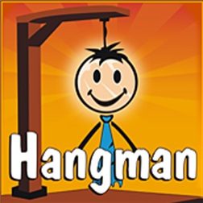

To move to the game click on the picture.

Game number 2: Tic Tac Toe
How to play:
The game is for 2 people. One is "x" and the other is "o".
Each player click on the button where he wants in his turn.
The "x" is starts.
To win you need to have a column or a line or a slant of your sign.
If the table is full the game is over and knowone winns.
To move to the game click on the picture.
Game number 3: number guessing
How to play:
The computer thinks about a number between 0 to 30.
In the box you can write numbers and the computer will check if your number is the number he thought about.
If your number is to small or to big the computer will tell you.
If you guessed the right number you win.
Also, the computer will tell you how much steps you did untill you guessed the right number.
To play again press on the restart butten.